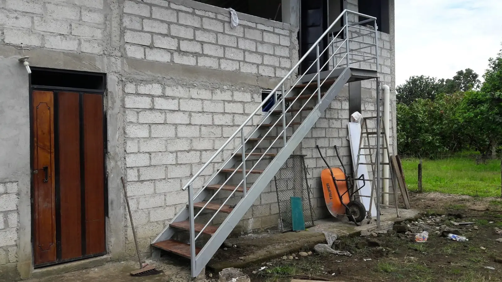
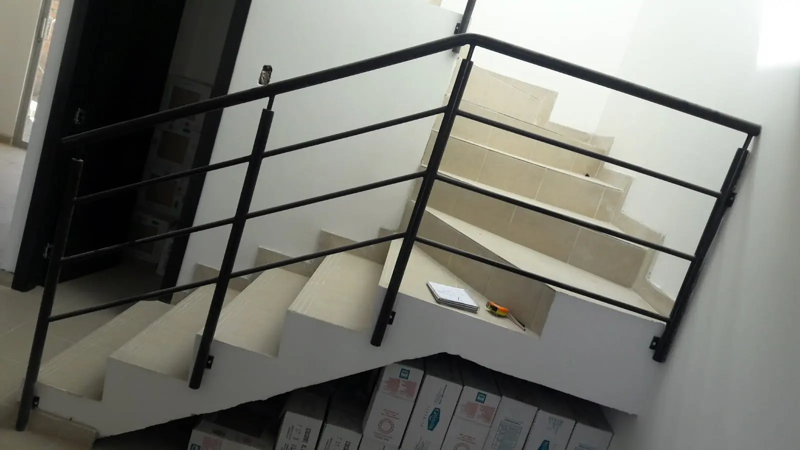
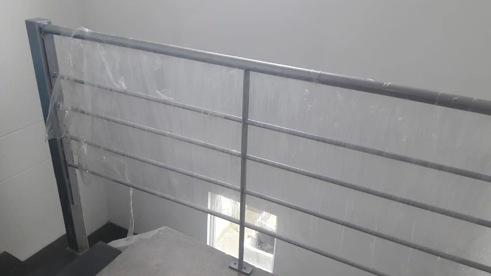
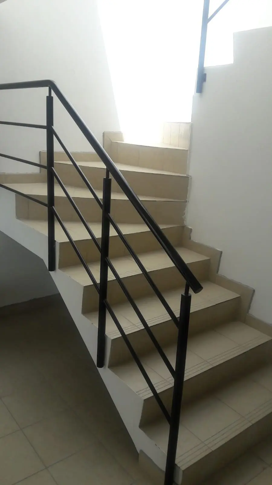
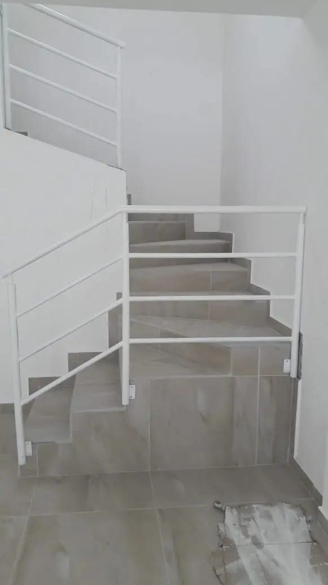
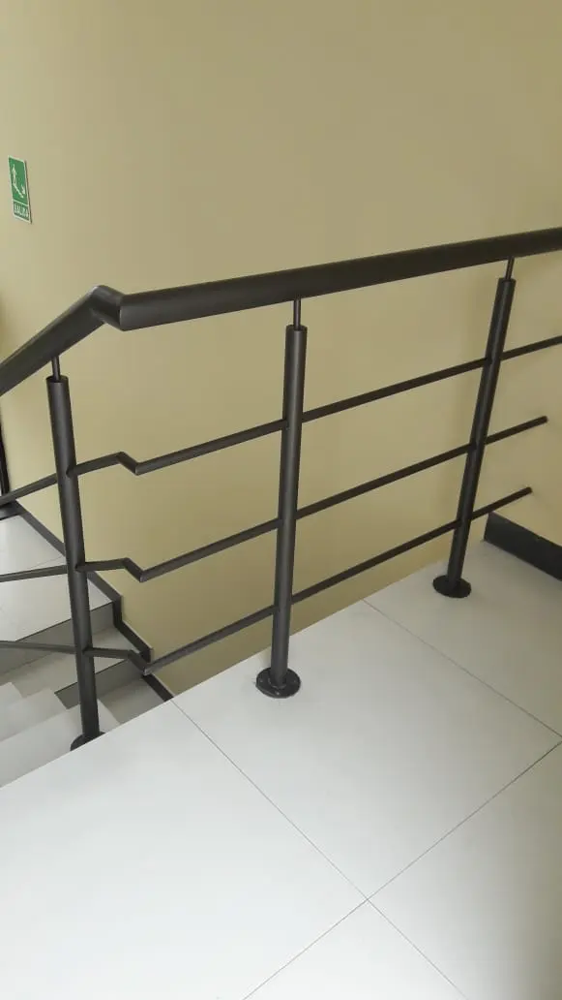
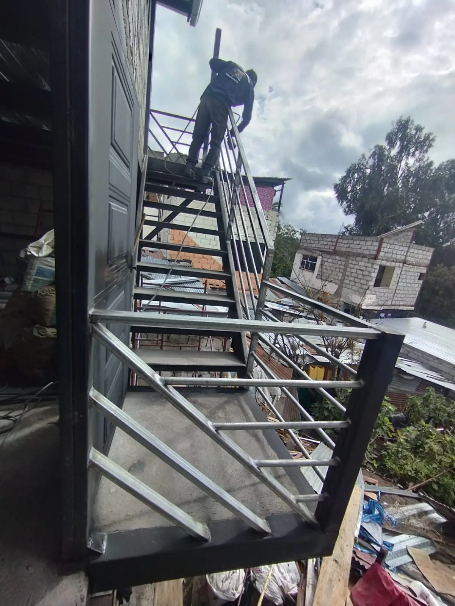

Gradas, escaleras y pasamanos
Gradas y Escaleras Metálicas en Quito
Fabricamos e instalamos gradas y escaleras metálicas a medida en Quito para viviendas, edificios y locales. Aquí la mayoría de la gente las llama gradas metálicas, y es el mismo trabajo: la estructura, los peldaños y el pasamanos del tiro completo.
Hacemos escaleras caracol, rectas, flotantes y con descanso, con el pasamanos incluido en el mismo trabajo, en hierro forjado con pintura electrostática. Si buscas pasamanos de acero inoxidable aparte, tenemos una página con esos modelos. Medimos en obra sin costo para darte el precio exacto.
Modelos y precios de referencia

$950
Escalera caracol · Ref. N1

$850
Gradas metálicas con pasamanos · Ref. N2

$60
Pasamanos de hierro · Ref. N7

$60
Pasamanos de hierro · Ref. N9

$60
Pasamanos de hierro · Ref. N10

$60
Pasamanos de hierro · Ref. N13

$60
Pasamanos de hierro · Ref. N15

$60
Pasamanos de hierro · Ref. N16

$950
Pasamanos de hierro con gradas metálicas · Ref. N21
Gradas y escaleras metálicas en Quito
Fabricamos gradas y escaleras metálicas en Quito para viviendas, edificios y locales comerciales. Cada escalera se diseña a medida según el espacio disponible, el uso previsto y las preferencias del cliente.
Aquí en Quito la mayoría de la gente las llama gradas metálicas, y es lo mismo que nosotros fabricamos: la estructura, los peldaños y el pasamanos del tiro completo. Si estás buscando gradas de hierro para una casa, un local o un conjunto, es este trabajo.
Ofrecemos escaleras en espiral, escaleras rectas, escaleras flotantes y escaleras con descanso, con el pasamanos incluido en el mismo trabajo.
El pasamanos del tiro lo fabricamos en hierro forjado con acabado en pintura electrostática, la opción más pedida para interiores. Si buscas específicamente pasamanos de acero inoxidable —para exterior, terraza o como pieza aparte de la escalera— tenemos una página con los modelos y precios de referencia.
Realizamos instalación completa, incluyendo anclajes en pared o piso según el tipo de estructura. También hacemos mantenimiento y reparación de escaleras y pasamanos existentes. Contáctanos para medir en obra y recibir tu cotización.
Preguntas frecuentes
¿Gradas metálicas y escaleras metálicas son lo mismo?
En Quito la mayoría de la gente dice gradas metálicas, y es exactamente el mismo trabajo que otros llaman escaleras metálicas: la estructura, los peldaños y el pasamanos del tiro completo, fabricados a medida.
¿Cuánto cuesta una grada o escalera metálica en Quito?
Los modelos de esta página tienen precio de referencia: una escalera caracol o un tiro de gradas con pasamanos parte de alrededor de $850–$950 en medidas de vivienda. El precio final depende del alto a salvar, el número de peldaños, el tipo de escalera y el material del pasamanos. Medimos en obra sin costo.
¿Qué tipos de escaleras metálicas fabrican?
Escaleras caracol, rectas, flotantes y con descanso. El tipo se elige según el espacio disponible y el uso; la estructura se fabrica a medida y el pasamanos va incluido en el mismo trabajo.
¿El pasamanos viene incluido con la escalera?
Sí. El pasamanos del tiro se fabrica junto con la escalera, normalmente en hierro forjado con pintura electrostática. Si lo quieres en acero inoxidable, para exterior o como pieza aparte, también lo hacemos y tenemos una página dedicada a pasamanos de acero inoxidable.
¿Hacen gradas metálicas para exteriores?
Sí, fabricamos gradas exteriores con estructura y peldaños tratados y pintados para aguantar la lluvia y el sol de Quito, con el anclaje que corresponda a piso o muro.
¿Instalan y reparan escaleras y pasamanos existentes?
Hacemos la instalación completa y también mantenimiento y reparación de escaleras y pasamanos ya instalados: refuerzo de anclajes, cambio de tramos y repintado.
¿Trabajan en Cumbayá, Tumbaco y los valles?
Sí. El taller está en Quito y el servicio cubre Quito y los valles: Cumbayá, Tumbaco, Calderón, Sangolquí y Nayón.